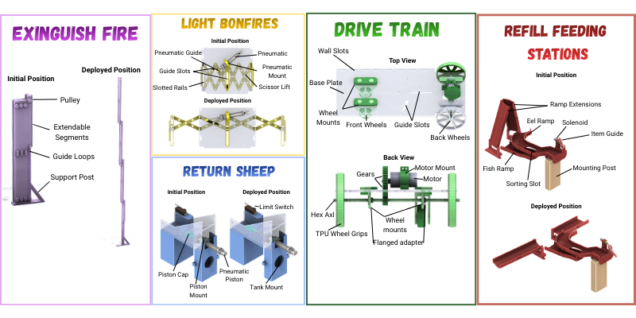

ME 2110: Autonomous Robotics Competition

Project Overview
The objective of this project was to design and build an autonomous robot to compete in a 40-second sprint competition. The robot was required to perform multiple high-precision tasks: exiting a home base, extinguishing a fire via a lever, lighting a bonfire by pulling torches, and returning sheep to their paddocksThe final system was constrained by a $120 budget and a strict 12" x 24" x 18" footprint.
My Contributions
As a key member of a four-person team, I contributed to various aspects of the robot's design, development, and documentation:
- System Architecture: Co-developed the sheep and fire subsystems, selecting a balance of pneumatic and motor-driven mechanisms to overcome the competition's two-motor limit.
- Conceptual Design & Selection: Contributed to the development of alternative design concepts and utilized a Concept Evaluation Matrix to select the most reliable and cost-effective iteration.
- CAD & Design Overview: Assisted in creating CAD models and design documentation for the subsystems to ensure all components fit within other subsystems and the required engineering specifications.

Key Mechanisms & Performance
Our design leveraged a hybrid approach of pneumatics and mechanical systems to maximize efficiency:
- Fire Extinguishment: A motor-driven telescoping arm extending 39" to fully activate the fire lever.
- Bonfire Lighting: A pneumatic-actuated horizontal scissor lift that extended 22.4" to pull torches onto the target bullseye.
- Sheep Deposition: A height-adjustable ramp and pneumatic piston system designed to deposit sheep into paddocks of varying heights.
- Eel and Fish: A diameter filtering design with extension slides that fall passively with the activation of the bonfire system.
- Drivetrain: A 1:4 gear ratio rear-wheel drive that reduced travel time from 8 seconds to under 4 seconds.

Outcomes
The final robot made it to the top 25% of all competing teams and getting the highest score in our specific lab section. The final robot design focused on prioritizing reliability over excessive complexity. Through iterative testing, we increased our points by 14% by optimizing the connecting arms in the telescoping system and switching to an aluminum hex axle to prevent gear slippage.